Bienvenue à La Ferme Bermond
Premier espace social et écocitoyen au cœur de Nice, dédié à l'éducation et à la durabilité.
Planifiez votre visiteHISTOIRE D’HIER…
La Ferme Bermond a été fondée en 1969 par Vincent Bermond,brigadier-chef de la police municipale de Nice.
L’initiative voitle jour lorsque la mairie de Nice lui propose de contribuer à lacréation d'une brigade équestre, donnant naissance au“Cavalier du Mont Boron”.
Ce projet, sans imaginer lesimplications sociales, économiques et culturelles futures, apermis à la ferme d’évoluer vers un espace social unique.
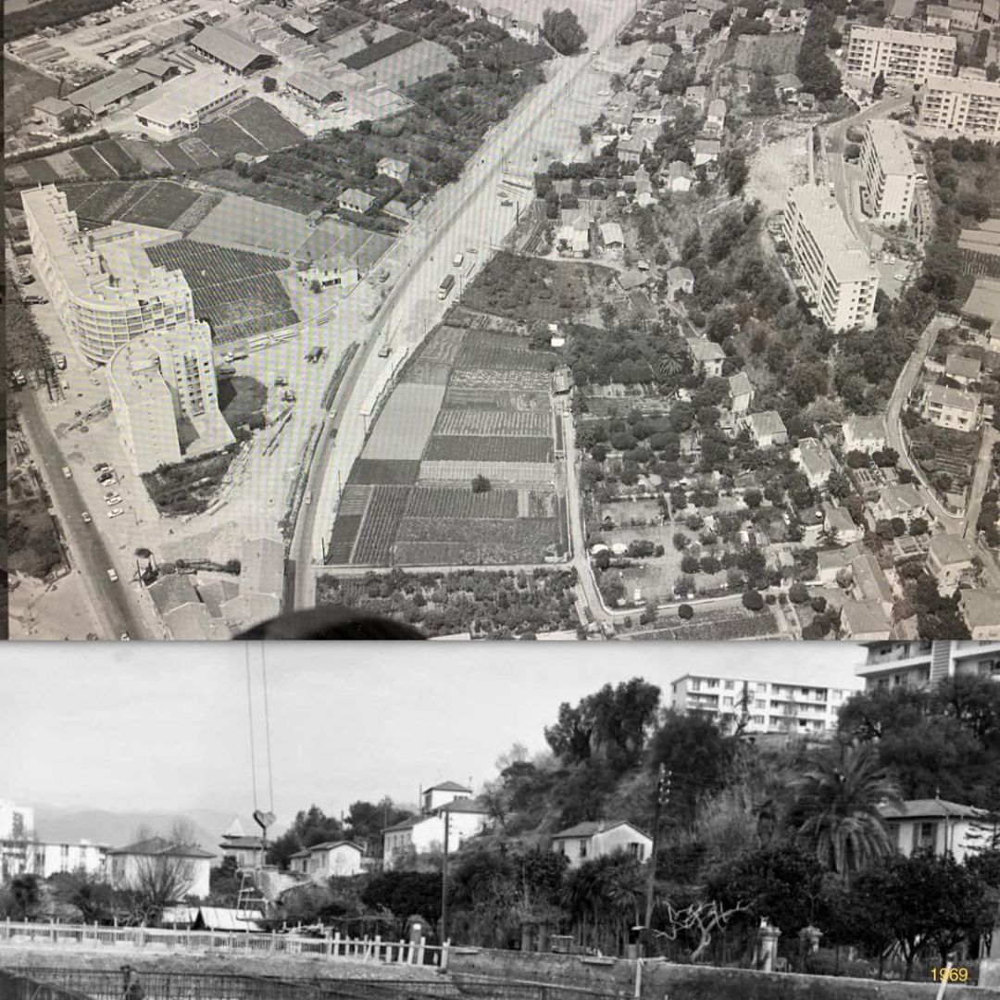
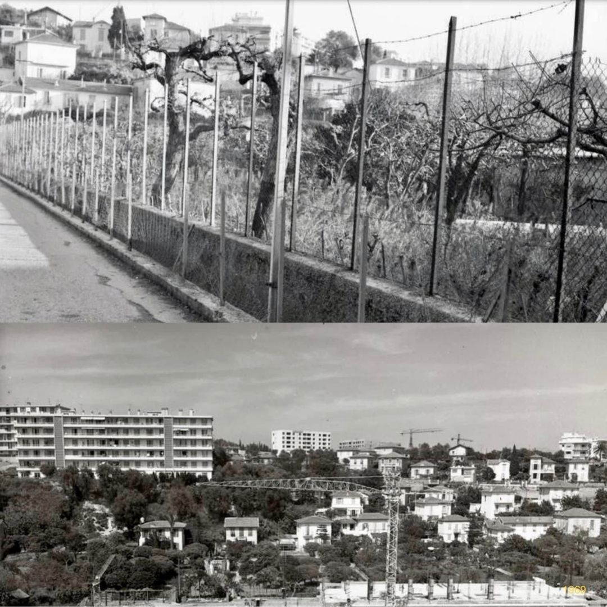

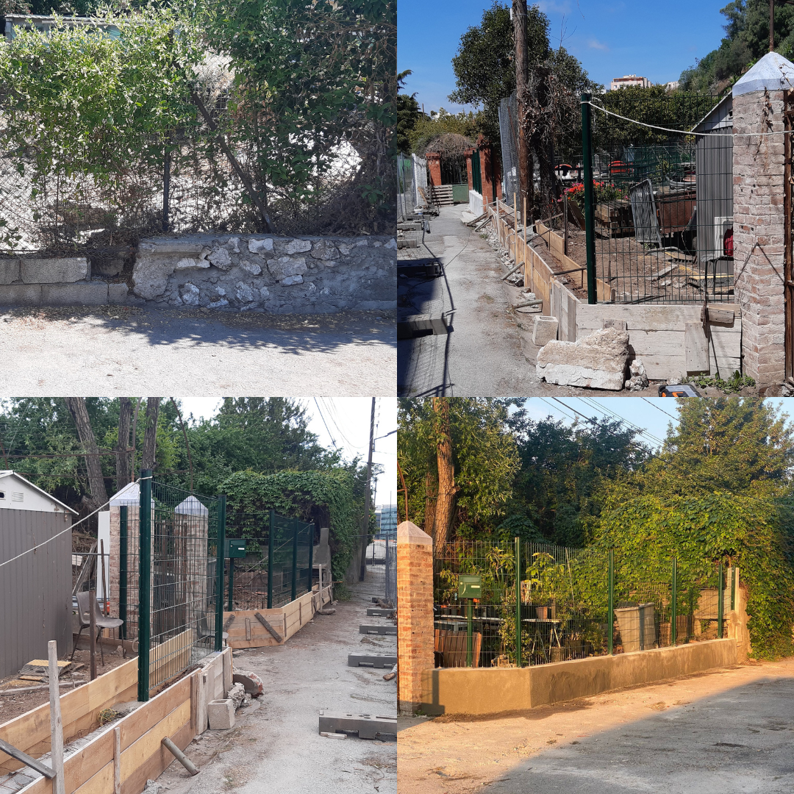
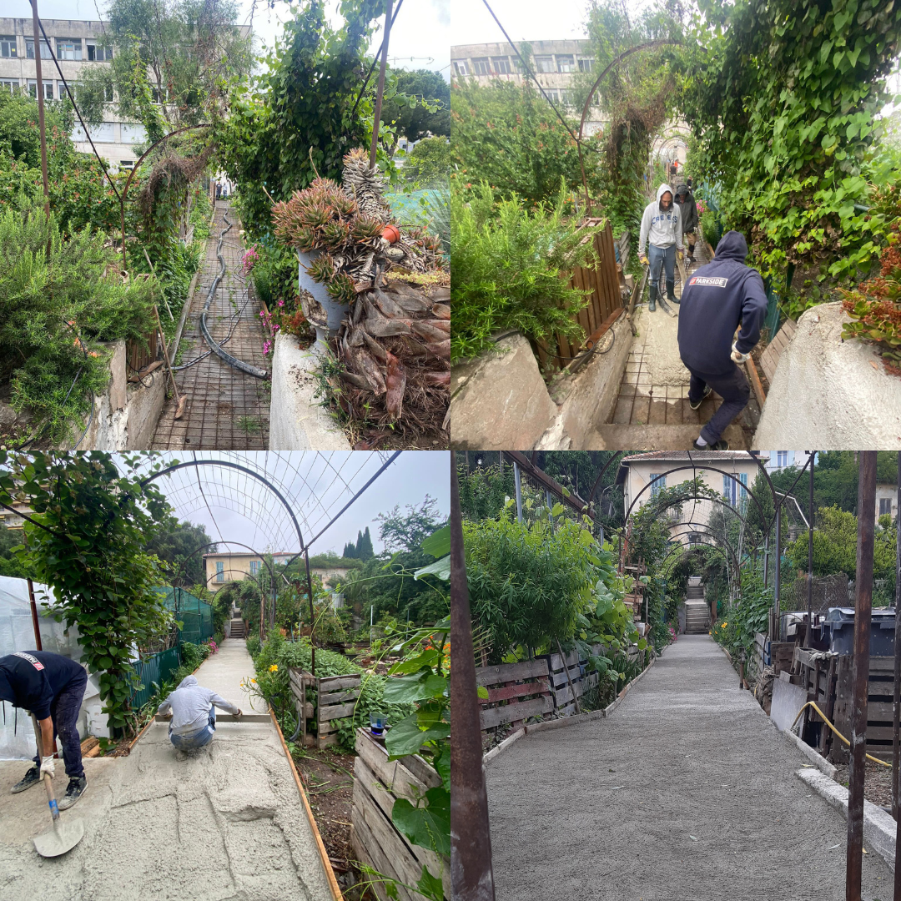
... et Aujourd'hui
Aujourd’hui, elle relie agriculture urbaine, permaculture,
écocitoyenneté, développement durable et économie
sociale et solidaire.
Son objectif principal: créer des liens
sociaux et intergénérationnels et promouvoir une
alimentation saine, locale et solidaire.
Elle s’inscrit
profondément dans l’histoire du quartier des Moulins, en
tant que lieu à la fois historique et culturel.
À la disparition de Vincent Bermond, en décembre 2016,
ses amis initient un processus de transition.
Ils s’efforcent
de pérenniser cette initiative d’agriculture urbaine, tout en
réfléchissant aux enjeux environnementaux
contemporains.
Leur mot d’ordre : agir collectivement
pour construire un avenir durable.
La ferme devient alors
un lieu où l’environnement est au service du social, et
inversement, renforçant sa vocation de créer des
connexions inter-sociales.
L’histoire de la ferme repose également sur des questions
fondamentales posées par ses membres: comment habiter
l’espace? Comment lui donner vie? Comment inscrire la
ferme dans l’histoire du quartier et de la ville?
Ces réflexions ont mené à la création d’un jardin potager et d’un
espace de rencontres et interactions, favorisant l’intégration
et la participation des personnes.
Un des grands objectifs de la ferme est de devenir
un espace de cohabitation entre hommes, animaux
et plantes.
Elle met en avant des interactions “inter-
sociales, interculturelles et inter-espèces”, où
chacun contribue à un ensemble harmonieux, riche
en complémentarités.
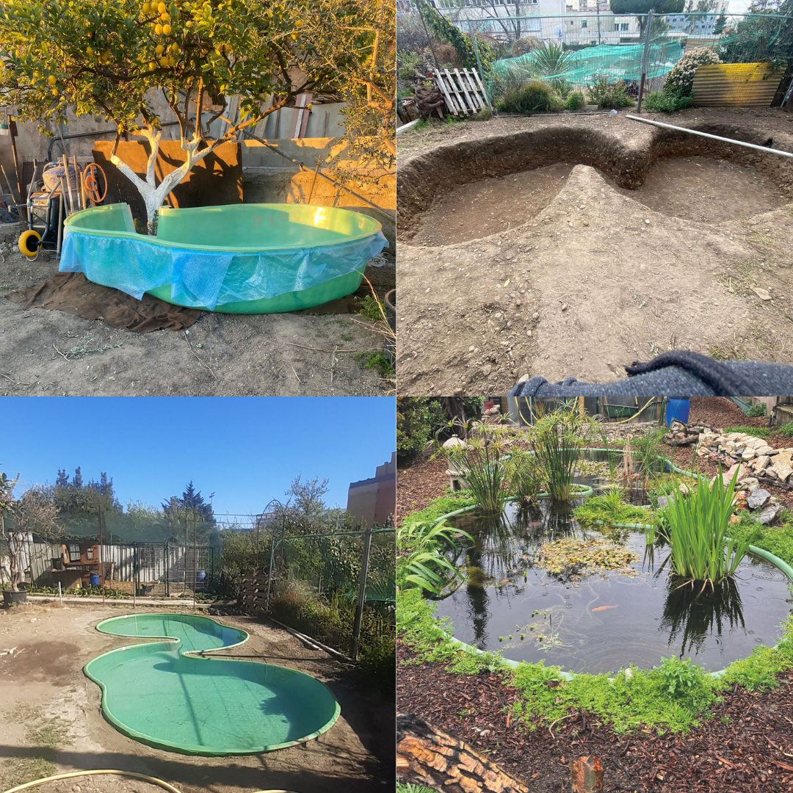


En 2017, la ferme devient une association sous le nom de «
La Ferme Bermond - Les amis de Vincent ». Ce tournant
associatif marque le début d’un développement progressif
grâce à l'implication des bénévoles, adhérents, et aux
soutiens publics et privés.
Ce travail quotidien fait de la
ferme un espace d’intégration intergénérationnel et
interculturel, et un lieu de transmission de savoir-faire.
Entre 2022 et 2024, dans le cadre du programme gouvernemental « France Relance », la
ferme bénéficie d’une rénovation globale, grâce à des partenariats avec la Ville de Nice,
la Métropole, la Région Sud, la CAF et plusieurs fondations privées. Les travaux réalisés
incluent:
1- La création d’une cuisine solidaire et participative, ainsi que d’un espace de
formation .
2- La rénovation des infrastructures techniques, administratives et pour les
animaux.
3- L’installation de panneaux photovoltaïques et de systèmes d’irrigation
durables
BUT ET PROJETS
La ferme est un lieu d’éducation populaire, créateur
de lien inter-generationnel, de mixité sociale et de
diversité culturelle. Le premier espace social écocitoyen
aux portes d’un quartier prioritaire de la ville,
d’un carrefour multi modal, d’un marché international
et de l’éco-vallée de Nice Ouest.
Impulser et co-élaborer des projets novateurs liant
la protection de l’environnement, le développement
économique et social, l’éducation, avec des partenaires
privés et les pouvoirs publics.
Être acteur de la protection de la nature,
de la biodiversité dans un secteur urbain de plus
en plus minéralisé.
Sensibiliser les différents acteurs et participants
autour de thèmes liés à l’écocitoyenneté,
au développement durable, au bien-être et à la
pédagogie. Plus particulièrement pour les enfants,
car de ce contact découle la curiosité, la sensibilisation
et le respect du vivant.
Transmettre des savoirs, des compétences, des valeurs
humaines, éthiques, sociales et de partage. Développer
et démontrer que nous pouvons prendre soin
de notre environnement dans son contexte
sociétal, culturel et économique.
Développer le bénévolat grâce aux formations inclusives des « P.A.M. » pour :
- les soins quotidiens apportés aux 200 animaux de la ferme, préparation,
distribution, entretien ;
- le maraîchage, semis, entretien, récoltes ;- la cuisine et la transformation des produits, préparation, service et entretien.
L’association - grâce au soutien des pouvoirs publics : État, Métropole, Département,
Région, Ville de Nice, CAF… est créatrice d’emplois en insertion et lieu de stages.
- Les dispositifs d’État visant l’insertion des mineurs, la Prévention Judiciaire de la
Jeunesse (PJJ) et les institutions accueillant les personnes porteuses de handicaps ;
- Les centres de formation pour les jeunes et les adultes (CFA horticulture / protection
de l’environnement / gestion des territoires…) et les écoles vétérinaires,
- En développant l’accueil d’étudiant.e.s en alternance et/ou en professionnalisation,
en lycée Éducation Nationale, CFA ou à l’Université.
Essayer de construire et consolider progressivement un modèle économique, social
et associatif, basé sur une coopération humaine, financière et technique entre les acteurs
de l’Économie Sociale et Solidaire, du secteur privé, associations, fondations,
coopératives, centre de formation, grandes entreprises, syndics de copropriété
et pouvoirs publics. Arriver, à terme, à proposer un modèle viable et autonome avec
une autosuffisance financière, nourricière et énergétique.
Nous pouvons parler de permaculture dans son vrai sens : végétaux, minéraux
et animaux sont en complète symbiose dans un cercle vertueux.
Les terrains entretenus par la ferme contribuent - modestement - à la lutte contre
le réchauffement climatique, la végétalisation en espace urbain.
Une bulle de verdure à préserver et à dupliquer ?
Viendront un centre de compostage mécanique, un séchoir et un four
solaire, un rucher, un centre d’aquaponie…
Des buts accessibles et motivants dans l’intérêt général.
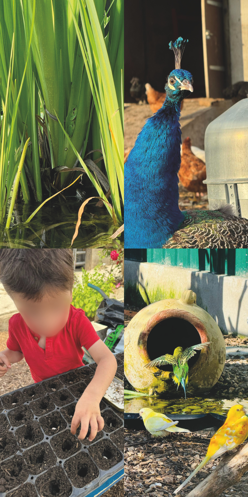
Nos axes de Travail
.png)
L’éducation populaire
.png)
Les activités pratiques
.png)
La sensibilisation à l’environnement
.png)
Les partenariats et événements
.png)
L’Économie Sociale et Solidaire
.png)
Les ateliers transgénérationnels et multiculturels
DE LA TERRE À L’ASSIETTE
une nouvelle dimension de nos actions
2023 : obtention de deux postes salariés à temps plein
financés par l’Etat dans le cadre d’une médiation
socio culturelle afin d’animer les activités éducatives
autour du maraîchage en agroforesterie, ainsi que
pour la transformation des produits de la ferme,
avec une cuisine solidaire et antigaspi.
Ainsi, adhérents, stagiaires et groupes, accueillis
participent aux activités :
- de jardinage en fonction des saisons :
semis, plantation, désherbage, récolte…
et découvrent les pratiques liées à l’agriculture en
milieu urbain, à l’agroforesterie et à la gestion des
ressources ;
- d’apprentissage de la cuisine en conditionnant
et en transformant une partie de la production
du potager ainsi que les denrées invendues
de nos partenaires dans une démarche antigaspi
qui s’inscrit dans une logique d’alimentation saine,
locale et solidaire.
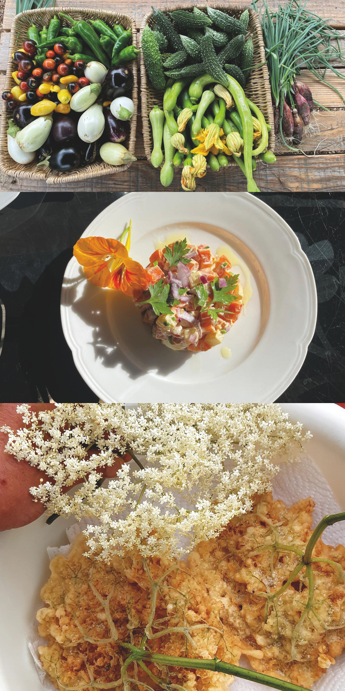
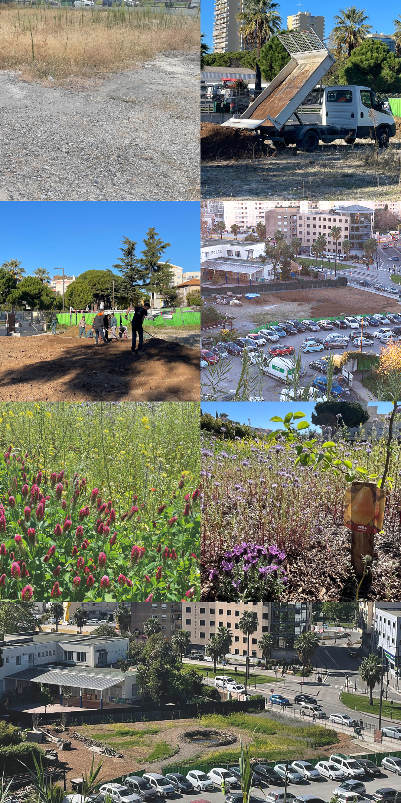
FONCTIONNEMENT
La ferme Bermond est une ferme urbaine pédagogique ouverte à tous les publics qui
veulent venir visiter les lieux pour rencontrer les animaux et découvrir les produits issus
de l’exploitation.
Le concept s’est monté autour des notions de développement du lien social et du vivre
ensemble
qui nous semble indispensables pour faire société. Parallèlement à cela la vie de la
structure tourne autour de la masse de travail nécessaire à son fonctionnement et au
développement
constant de nos projets.
L’adhésion est donc gratuite en échange d’une quantité minimale de temps de travail que
les adhérents bénévoles (membres actifs) s’engagent à effectuer. En retour la ferme leur
permet de pouvoir profiter de ses productions maraichères (fruits, légumes et oeufs) en
contrepartie d’une participation financière votée chaque année lors de l’assemblée générale
(cette participation n’est qu’indicative et chacun fait en fonction de ses moyens).
Nous avons également créé il y a deux ans un second type d’adhésion pour des gens qui
souhaitaient soutenir notre action mais qui ne pouvaient pas s’impliquer
physiquement.
Ces membres bienfaiteurs s’acquittent d’une cotisation de 15 € sans contrepartie et peuvent
prétendre avoir accès aux surplus de productions non partagés entre les membres
actifs.
Des partenariats avec divers commerçants et grossistes de la région, notamment le Maché
d’Intérêt National (MIN), afin de récupérer les denrées invendues et de les transformer
dans une démarche antigaspi, de nourriture pour les animaux et de compost.
La récupération des broyas d’entreprises d’élagage pour le paillage des enclos et zones de
culture. Ce broya permet également une grande économie d’eau en évitant l’évaporation
des parcelles cultivées, l’apport de carbone et la couverture du sol.
CAGNOT
LA FERME EN CHIFFRES
En 2023 :
4 515 visiteurs dont 85%
sont des habitants du QPV
des Moulins et des Sagnes.
17 stagiaires, 5 services
civiques et 3 000 scolaires.
Parmi eux plus de 130 sont
adhérents de l’association.
Le dispositif départemental
« Jeune Engagé pour le
Climat » permet à de nombreux
jeunes âgés de 18 ans à 24 ans,
de venir effectuer 50 heures de
bénévolat.
Environ 3 Kgs de légumes
récoltés au m2 de surface cultivable,
200 animaux élevés, accueillis
et soignés, dont
une soixantaine de poules
pondeuses.
Nos ateliers participatifs
et pré apprentissage maison
« alimentation locale,
saine et solidaire », au cours
desquels ont été servis
175 repas participatifs et 1 340
repas solidaires et bénévoles.
En 2024 : 1 500 m2 de terrain
supplémentaire avec une
trentaine de fruitiers plantés
et un maraîchage plein champs
en agroforesterie.
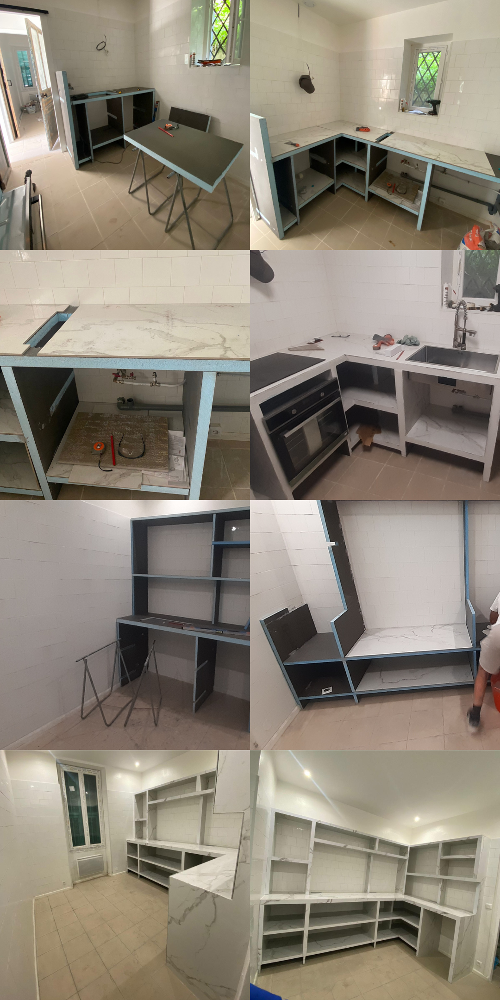
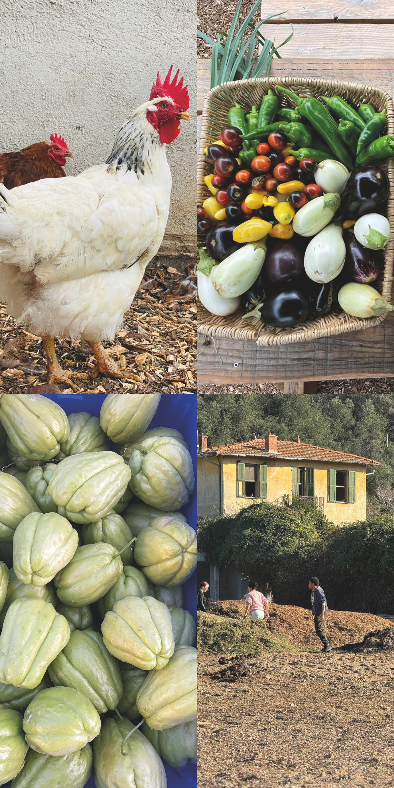
NOS ACTIVITÉS
Elles s’inscrivent dans l’Économie Sociale
et Solidaire du territoire. Visite de la ferme
pédagogique en groupe ou en individuel, rencontre
avec les animaux, découverte des produits issus
de l’exploitation agricole, gestion des déchets verts,
ateliers cuisine et transformation des produits,
jardinage, cueillette des récoltes, soins aux animaux.
La possibilité pour les gens du quartier de venir
déposer leurs déchets verts sur notre zone
de compostage.
NOS PRODUITS
En fonction des saisons et de ce que le terre nous
offre, vous pourrez retrouver chez nous :
tomates, aubergines, plantes aromatiques,
concombres, oignons, fenouil, blettes, melons,
courgettes, pâtissons, courges, piments, salades,
pommes de terre, cébettes, maïs, haricots, tournesols,
amarantes, nèfles, poires, cerises, kakis, figues,
abricots, christophines, gombos…
Nous transformons aussi nos récoltes en :
confitures, gelées, sirops, sauces…
Nous proposons également les œufs
de nos poules, oies, et canes.
Équipe
Rencontrez les membres dévoués qui font vivre la ferme et ses projets communautaires.
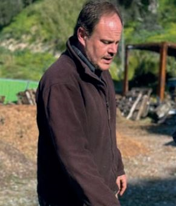
STÉPH
LE BIG BOSS
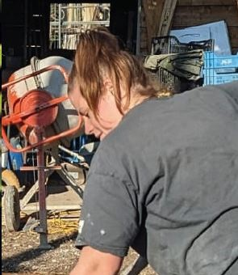
DAME LULU
BRIN D’ACIER
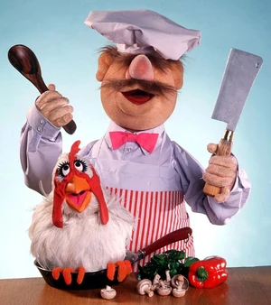
RECRUTEMENT
EN COURS
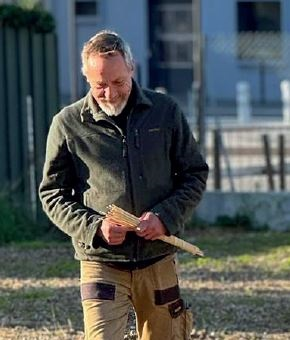
ÉRIC
LE LÉGUME À VARIER
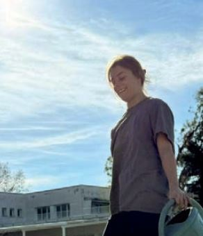
LAURA
LA PÂQUERETTE JOVIALE
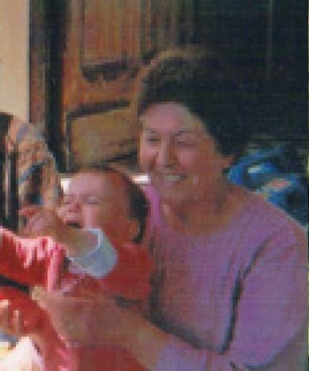
MALOU
LE COEUR D’ARTICHAUT
Partenaires
Nous collaborons avec des partenaires locaux pour soutenir nos initiatives et élargir notre impact. Leur soutien est essentiel pour le développement durable de nos projets.
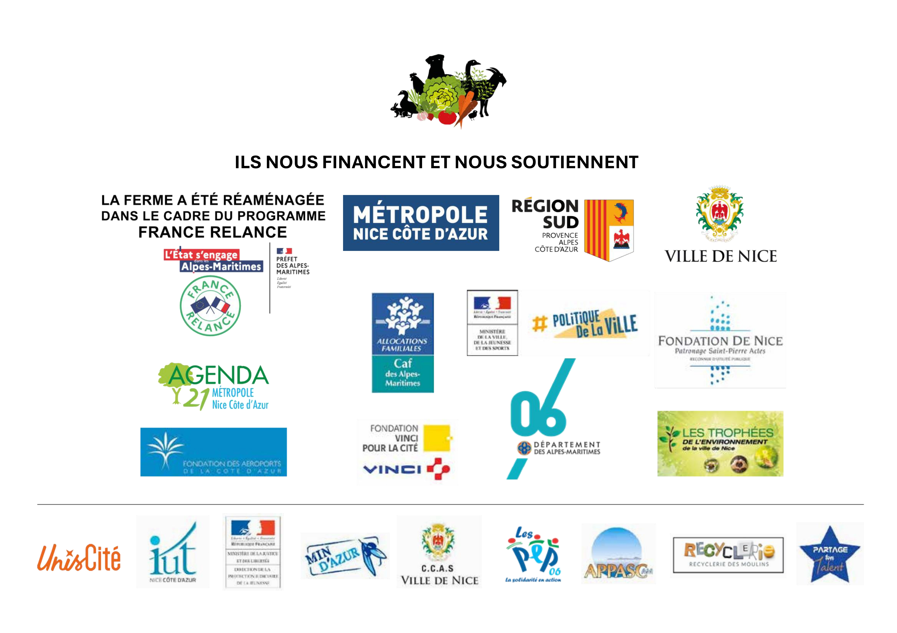
Visiter la Ferme
Horaires : Lundi - Vendredi : 9h - 18h
Adresse : 4 Bd Paul Montel, 06200 Nice
Pour nous contacter, envoyez-nous un message directement ci-dessous.